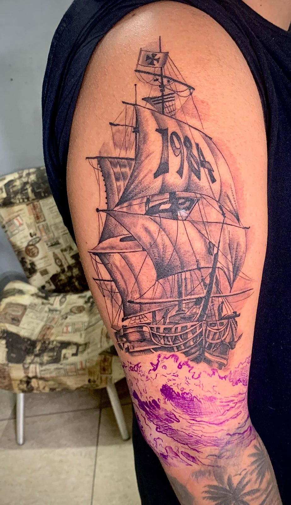
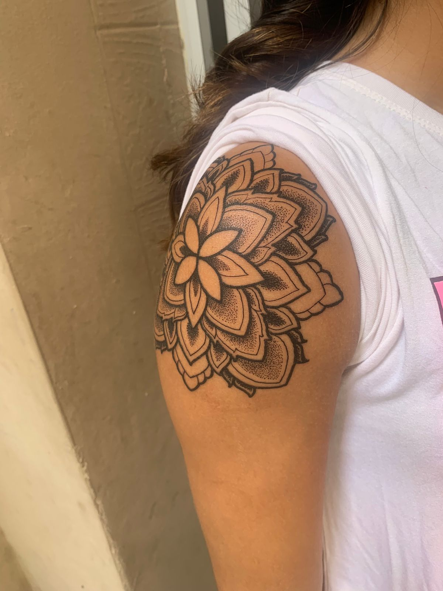
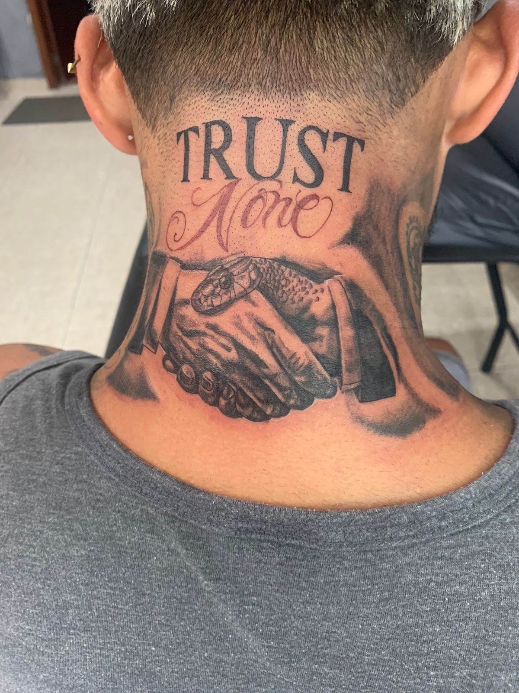
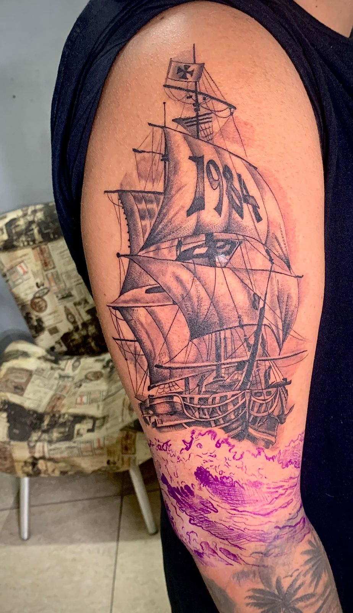
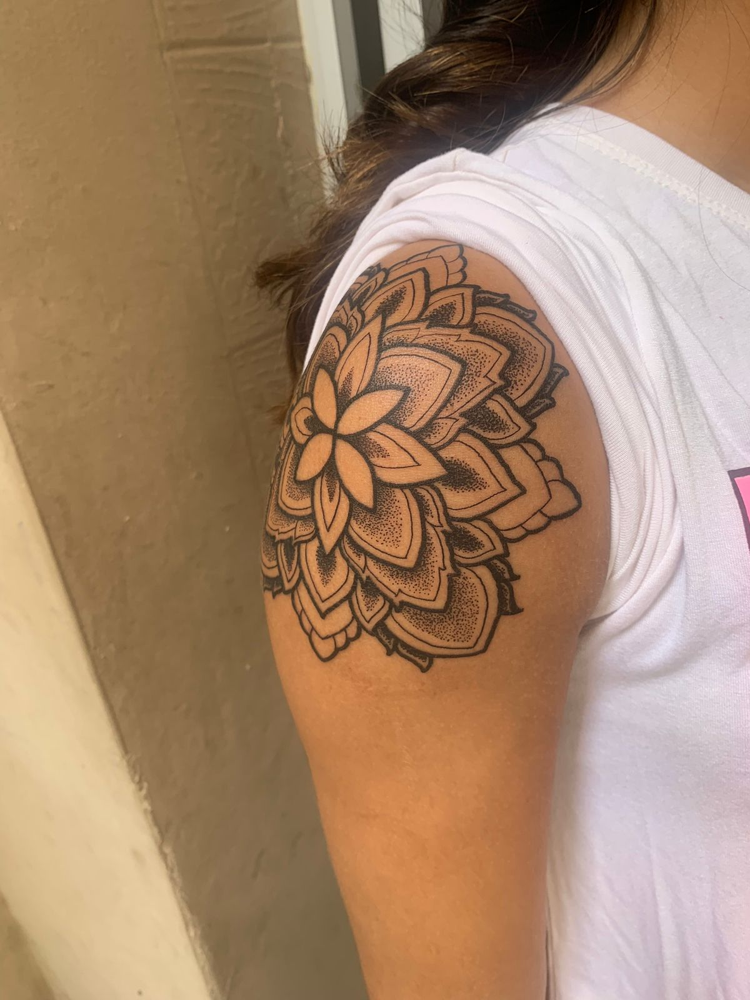
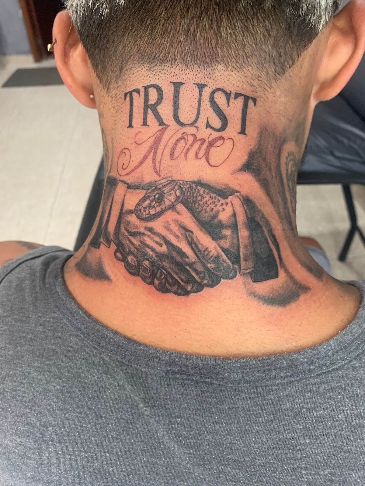

Nosso Trabalho

 







Instruções pós Tatuagem
Após realizar sua tatuagem, é essencial seguir os cuidados recomendados para garantir a boa cicatrização e preservar a qualidade da arte.
Cuidados após a tatuagem:
- Lave a região com sabonete neutro duas vezes ao dia, com as mãos limpas.
- Aplique pomada cicatrizante recomendada pelo tatuador.
- Mantenha a tatuagem hidratada, mas sem excesso.
- Evite coçar ou arrancar casquinhas.
- Use roupas leves que não esfreguem a pele tatuada.
Evite durante a cicatrização:
- Alimentos como carne de porco, chocolate, frutos do mar e alimentos gordurosos.
- Exposição ao sol, piscina, mar e sauna por no mínimo 15 dias.
- Usar protetor solar na região tatuada apenas após a cicatrização completa.
Tempo de cicatrização: Em média, a pele cicatriza superficialmente em 7 a 15 dias. A cicatrização completa pode levar de 30 a 45 dias, dependendo da sua pele e cuidados.